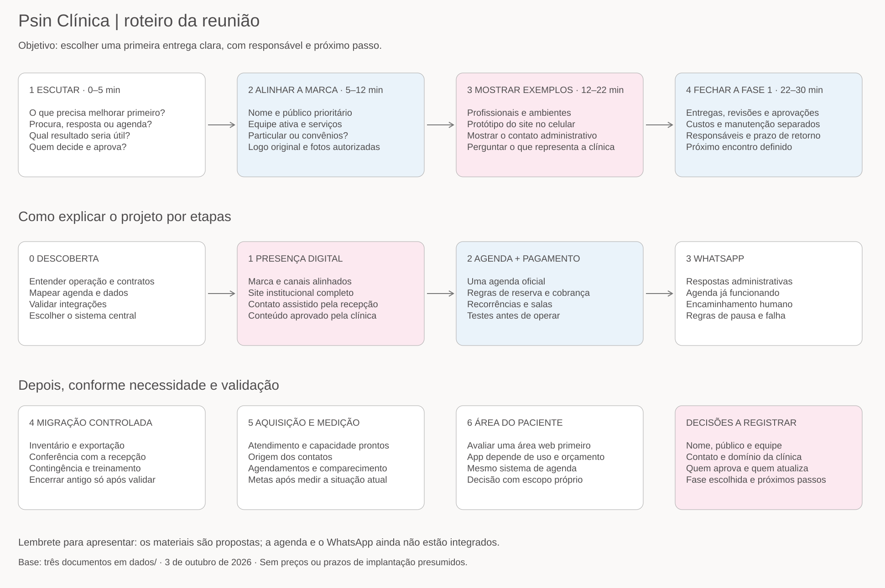

Um site navegável e um mapa para orientar as decisões da implantação digital.
Abrir o websiteAbrir página de linksConsultar o roteiroConheça a clínica, os profissionais, os ambientes e o caminho para solicitar atendimento.
Escutar → alinhar a marca → mostrar exemplos → escolher a primeira etapa.
Baixar o mapa editávelVer mapa em tamanho completo ↗
Para editar, abra o Excalidraw e use Abrir para carregar roteiro-reuniao.excalidraw. O roteiro escrito contém falas sugeridas, perguntas e uma ficha de decisões.